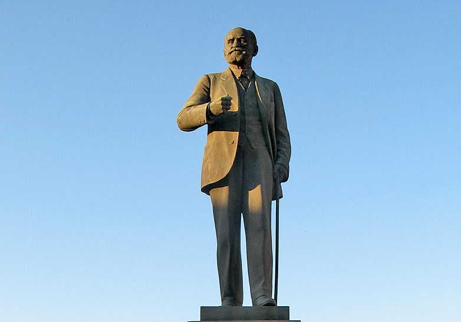

←Назад

Бронзовая фигура в рост установлена на четырёхгранном гранитном постаменте (общая высота памятника 7,5 м, высота фигуры 3,4 м). Иван Петрович Павлов изображён как бы идущим опираясь на трость. Жест согнутой в локте руки и лёгкий поворот головы нарушают общую статичность композиции. На лицевой стороне постамента простая надпись: "ИВАНУ ПЕТРОВИЧУ ПАВЛОВУ" Под ней лепная изогнутая лавровая гирлянда со свисающими концами. Высокий стилобат и окружающий его цветник создают примыкающую к памятнику территорию, ограждая его от прохожей части улицы.